就在代数学获得新生的同时，在数学的另一大领域——几何学的内部也正悄悄地发生着革命性的变化。可是，由于几何学的历史沉淀要厚实一些，牵涉到人类的思想，这样的变革就显得更为不易。我们必须追溯到古希腊，欧几里得几何在数学的严格性和推理性方面树立了典范，2000多年来，它始终保持着神圣不可动摇的地位。数学家们相信欧几里得几何是绝对真理，例如巴罗曾逐条给出理由对其加以肯定和颂扬，他的学生牛顿也给自己创立的微积分披上了欧几里得几何的外衣。
笛卡尔的解析几何虽然改变了几何研究的方法，但在本质上并没有改变欧几里得几何的内容，他在每一次几何作图后都会小心翼翼地给出另外的证明。与笛卡尔同时代或稍晚的哲学家霍布斯（T.Hobbes，1588—1679）、洛克（J.Locke，1632—1704）、莱布尼茨、康德和黑格尔（G.W.F.Hegel，1770—1831）也都从各自的角度判定欧几里得几何是明白的和必然的。康德在《纯粹理性批判》中甚至声称，感性直观促使我们只按一种方式去观察外部世界，他还断言，物质世界必然是欧几里得式的，并认为欧几里得几何是唯一的和必然的。
可是，早在1739年，即康德上大学的前一年，苏格兰哲学家休谟（D.Hume，1711—1776）却在一本著作中否定了宇宙中的事物遵循一定的法则。他的不可知论表明，科学是纯粹经验性的，欧几里得几何定理未必是真理。事实上，欧几里得几何并非无懈可击，从它诞生之日起，就有一个问题困扰着数学家们，那就是第五公设，也称平行公设。它的叙述不像其他4条公设那样简单明了，当时就有人怀疑它不像一个公设而更像一个定理。这条被达朗贝尔戏称为“几何学的家丑”的著名公设是这样叙述的：
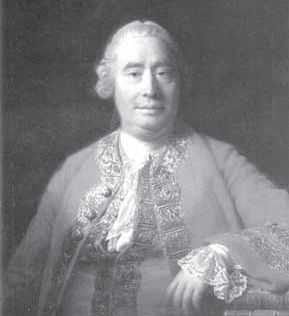
不可知论者休谟
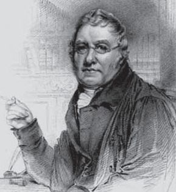
苏格兰数学家普莱费尔
如果同一平面上的一条直线同另外两条直线相交，同一侧的两个内角之和小于两个直角，则如果两条直线无限延长，它们必在这一侧相交。
为了遮掩这一“家丑”，数学家们做了两方面的努力：一是试图用其他公设和定理证明它，如第四章提到的欧玛尔·海亚姆和纳西尔丁的尝试；二是努力寻找一条容易被接受、更加自然的等价公设代替它。在历史上，用来代替它的公设不下10条，其中最有名的也是出现在当下的教科书里的，是由18世纪的苏格兰数学家、物理学家普莱费尔（J.Playfair，1748—1819）提出的（也称普莱费尔公理），即
过已知直线外一点，能且仅能作一条直线与已知直线平行。
需要指出的是，早在海亚姆和纳西尔丁之前，2世纪的古希腊天文学家托勒密（可能是历史上第一个）便尝试并认为自己证明了平行公设，但5世纪的哲学家普罗克洛斯（H.D.Proclus，410—485）发现，托勒密的证明中用到了上述普莱费尔公理。也就是说，普莱费尔公理并非这位苏格兰人首创。
接下来的历史是一段空白，因为就连欧几里得的《几何原本》也在欧洲消失了，只有能熟读阿拉伯文的波斯人可以看到并做了研究。直到中世纪以后，这本书从阿拉伯文版本被译成拉丁语，第五公设才重新出现在欧洲数学家的面前。沃利斯对这个问题进行了几番探究，但他的每一种证明中要么隐含了另一个等价的公设，要么存在其他形式的推理错误。后来到了18世纪中叶，才有三位不太知名的数学家取得了一些有意义的进展。
事实上，这三位数学家所用的方法与欧玛尔·海亚姆和纳西尔丁的尝试并无本质性区别。他们同样考虑了等腰双直角四边形ABCD，其中∠A=∠B为直角，再用归谬法排除∠C=∠D为锐角和钝角的情形，但却栽在钝角假设上。经过一番努力，在一位意大利同行的工作基础上，一位德国人对第五公设能否由其他公设或公理加以证明首先表示了怀疑，一位瑞士人则认为如果一组假设引起矛盾，就有可能产生一种新的几何。后两位数学家虽然都离成功很近，却由于某种原因退缩了，不过他们仍是非欧几何学的先驱。
前文中我们提到过由两位数学家同时开创一门新学科的例子，例如笛卡尔和帕斯卡尔发明了解析几何，牛顿和莱布尼茨创立了微积分。接下来我们要谈到的非欧几何学的诞生更加稀奇，因为有三位不同国度的数学家参与其中，并在相互不知情的情况下用相似的方法创立了非欧几何学。这三位数学家分别是德国的高斯、匈牙利的J.鲍耶和俄国的罗巴切夫斯基，第一位早已大名鼎鼎，后两位则都是初出茅庐，并主要凭借这项工作留名史册。
在前人工作的基础上，这三位数学家都是从普莱费尔公理出发，判定过已知直线外一点能作多于一条、只有一条或没有一条直线平行于已知直线这三种可能性，分别对应前文所说的锐角假设、直角假设和钝角假设。这三位数学家中的每一位都相信在第一种情况下能实现几何相容性，虽然他们并没有证明这种相容性（即锐角假设与直角假不矛盾），但都进行了锐角假设下的几何学和三角学证明。至此，新的几何学便建立起来了。
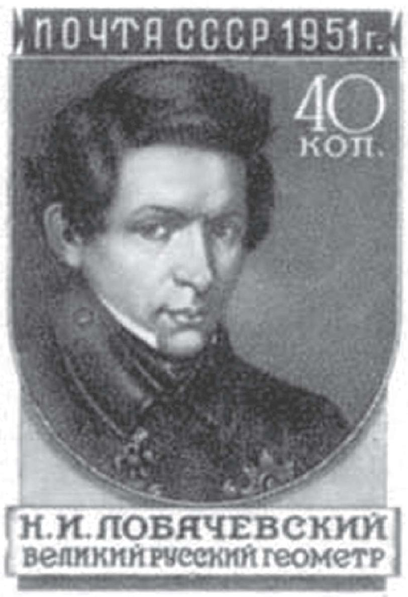
苏联邮票上的罗巴切夫斯基
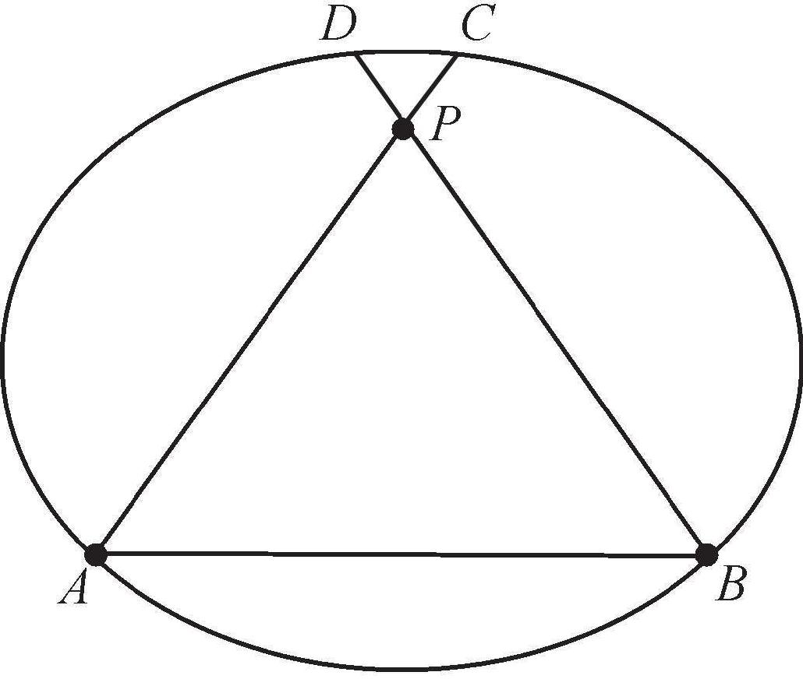
罗巴切夫斯基空间图例
下面我们举一个简单的例子。考虑任意一条二次曲线（例如椭圆）围成的区域，它可以被视为一个罗巴切夫斯基空间。如上图所示，椭圆上任何两点A、B（无穷远点）的连线被定义为直线，从椭圆内（包括边界）、直线AB外任意一点P均可引两条直线与AB交于A、B，其延长线分别与椭圆交于C、D。根据德扎尔格定理（参见第五章），相交于无穷远点的两条直线即相互平行，因此直线APC和BPD均与AB平行。
值得注意的是，上述例子虽然简单明了，却不能完全满足欧几里得几何的前4个公设。不过，我们可以对此加以修改。依然是任意一个椭圆，只不过要用曲线来代替直线，这些曲线满足欧几里得几何的前4个公设，且在两个端点处与椭圆相互垂直。在这种情况下，我们甚至可以作无穷多条曲（直）线与已知曲（直）线平行。
高斯将这一新的几何学命名为“非欧几何学”，这使得所有几何学都用那位幸运的古希腊数学家的名字命名，这种现象在其他科学分支中都不存在。但除了在给朋友的信中略有透露以外，高斯生前没有公开发表过任何这方面的论著，或许是因为他认为自己的这一发现与当时流行的康德的空间哲学相违背，担心因此受到世俗的攻击，“黄蜂就会围着耳朵转”，毕竟那时的他已经闻名全欧洲。也恰恰因为这样，给两位年轻的后辈留下了出名的机会，这一至高的荣誉无疑也属于他们各自的祖国。
J.鲍耶（János Bolyai，1802—1860）是阿贝尔的同龄人，他出生的小镇属于一个叫特兰西瓦尼亚的大区，即今天罗马尼亚的克卢日县。在第一次世界大战结束以前，这个地理区域有8个多世纪隶属于匈牙利。J.鲍耶的父亲F.鲍耶早年就读于哥廷根大学，是高斯的同学和终身好友，后来回到特兰西瓦尼亚，在特尔古穆列什的一所教会学校执教长达半个世纪。在父亲的教导下，J.鲍耶在少年时代就学习了微积分和分析力学，16岁考入维也纳帝国皇家理工学院，毕业后被分配到军事部门工作，但却一直迷恋数学尤其是非欧几何学的研究。
可是，当F.鲍耶（Farkas Bolyai，1775—1856）得知儿子的志趣后，他坚决反对并写信责令J.鲍耶停止研究，“它将剥夺你所有的闲暇、健康、思维的平衡以及一生的快乐，这个无底的黑洞将会吞噬1000个如灯塔般的牛顿”。尽管如此，J.鲍耶仍“执迷不悟”，23岁那年他利用放寒假回家探亲的机会，把写好的论文带回家请父亲过目，但仍不被F.鲍耶接受。直到6年以后，F.鲍耶要出版一本数学教程，才勉强答应把儿子的研究结果放在附录里，但被压缩至24页。此外，F.鲍耶还把这份附录的清样寄给高斯，没想到的是，在很久后收到的回信里，高斯称他30年前就已经得到了这一结果。
不出所料，这部著作及其附录的发表没有引起任何反响。第二年，J.鲍耶不幸遭遇车祸致残，退役后回到故乡，并和他的父亲一样经历了一场糟糕的婚姻。不同的是，儿子比父亲还多经受了一个磨难——贫穷。再加上俄国方面又传来罗巴切夫斯基创立新几何学的消息，J.鲍耶只得在文学写作里寻求安慰，却也没有取得成功。直到J.鲍耶郁郁寡欢而死的30多年以后，匈牙利方面才修整了他的墓地，并建造了一座他的雕像供人瞻仰。后来，匈牙利科学院又设立了以J.鲍耶名字命名的国际数学奖，数学家庞加莱、希尔伯特和物理学家爱因斯坦先后获得此奖项。
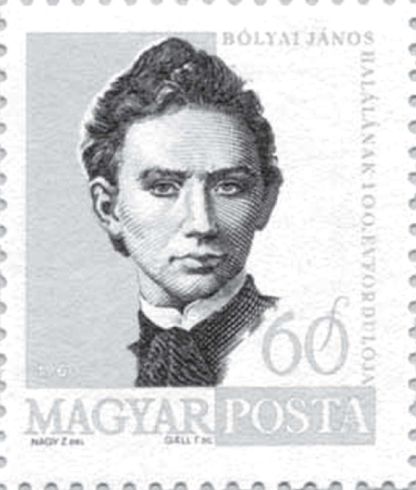
匈牙利邮票上的J.鲍耶
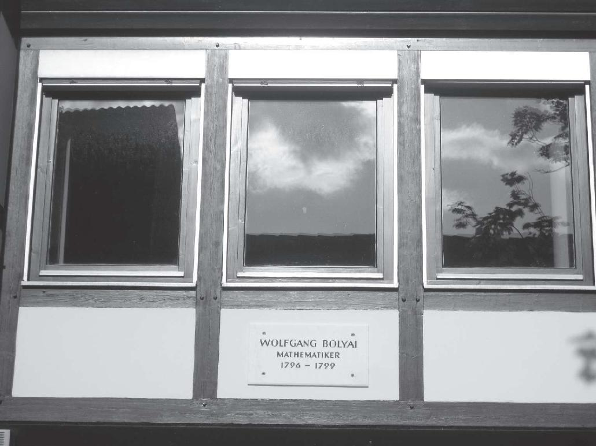
F.鲍耶的故居。作者摄于哥廷根
现在，我们来谈谈最先发表非欧几何学概念的罗巴切夫斯基（N.Lobachevsky，1792—1856），他比J.鲍耶早10年出生在莫斯科以东约400公里处的下诺夫哥罗德。他的做神职工作的父亲早逝，幸亏他的母亲勤劳、顽强、开明，把三个儿子都送到300多公里以外（与莫斯科相反方向）的喀山中学就读，其中罗巴切夫斯基将在那里度过余生。4年以后，年仅14岁的罗巴切夫斯基进入喀山大学。喀山是俄罗斯联邦鞑靼斯坦自治共和国首府，喀山大学后来成为除莫斯科大学和圣彼德堡大学以外最令人尊敬的学府，可是在罗巴切夫斯基时代它还默默无闻。
与前文提到的有些数学家一样，罗巴切夫斯基在中学和大学里都遇到了优秀的数学老师。在他们的教导下，他在掌握了多门外语以后就认真阅读了一些数学家的原著，并展现了自己的才华。他那富于幻想、倔强和有些自命不凡的个性导致他经常违反学校纪律，却得到了教授们的欣赏和庇护。他硕士毕业以后留校工作，依靠卓越的行政能力和除非欧几何学以外的学术成就，一路升迁，直至成为教授、系主任乃至一校之长，列夫·托尔斯泰（Leo Tolstoy，1828—1910）进入东方语言系（后来列宁进入法律系）时，他正好担任校长。
虽说罗巴切夫斯基在事业上春风得意，但他在非欧几何学方面的工作却未能得到承认。因为俄国是一个落后的国家，之前还没有出现一位闻名欧洲的数学家，不敢贸然承认这项伟大的发明。1823年，罗巴切夫斯基撰写了一篇论文《几何学原理》，部分包含了他的非欧几何学的新思想，但在俄罗斯科学院审读时被否定了。三年后，他在喀山大学物理数学系学术会议上阐述了他的论文，却被他的同事们视为荒诞不经的想法，没有引起任何注意，甚至手稿也遗失了。又过了三年，已是一校之长的罗巴切夫斯基在《喀山大学学报》上正式发表他的研究结果—《论几何基础》，他的新思想才缓慢地传递到西欧。
无论如何，一门新的几何学终于宣告诞生了，它被后人称作罗巴切夫斯基几何。可是，高斯和J.鲍耶的名字并没有被用来为新几何学冠名，鲍耶在他父亲的著作的附录里称它为“绝对几何学”，罗巴切夫斯基则在他的论文里称它为“虚几何学”。那时候，新几何学的影响力十分有限，人们对它半信半疑。直到高斯去世，他的那本有关非欧几何学的笔记本被公之于众，再加上高斯的地位和名望，人们的目光才被吸引过来，“只能有一种可能的几何学”的信念产生了动摇。
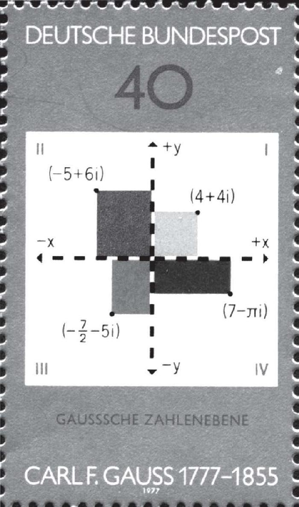
邮票上的高斯整数
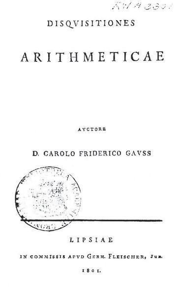
高斯年轻时的著作《算术研究》的扉页
最后，我们扼要地介绍一下“数学王子”高斯。1777年，高斯出生在德国中北部小城布伦瑞克的一个农民家庭，是他母亲生育的唯一的孩子。据说高斯5岁时就发现了父亲账簿上的一处错误。高斯9岁那年正在小学读书，一次他的老师为了让学生们有事可做，让他们把从1到100的所有数字加起来，高斯几乎立刻就得出了正确答案：5050。从那以后，高斯获得了布伦瑞克公爵的资助，直到公爵去世，那时高斯即将成为哥廷根大学教授兼天文台台长。
起初，高斯在做语言学家抑或数学家之间犹豫不决。他决心全身心投入数学领域是在快满19岁时，他通过数论方法对正多边形的欧几里得作图理论（只用圆规和没有刻度的直尺）做出了惊人的贡献。尤其是，他发现了正17边形的作图方法，这是一个2000多年来一直悬而未决的难题。高斯初出茅庐，技艺却已经炉火纯青了，而且之后的50年里他一直保持着这样的水准。1801年，年仅24岁的高斯出版了《算术研究》，开创了现代数论的新纪元。书中出现了有关正多边形的作图方法、方便的同余记号，以及优美的二次互反律的首次证明等。
上面我们提到的只是高斯年轻时在数论领域的贡献，在他人生的各个阶段，几乎在每个数学领域都做出了开创性的工作。此外，他也是那个时代最伟大的物理学家和天文学家之一。但数论无疑是高斯的最爱，他称其为“数学的皇后”。高斯曾说：“任何一个下过一点儿功夫研习数论的人，都必然会感受到一种特别的激情与狂热。”现代数学“最后一个百事通”——希尔伯特的传记作者在谈到大师放下代数不变量理论转向数论研究时也指出：“数学中没有一个领域能够像数论那样，以它的美——一种不可抗拒的力量——吸引着数学家中的精英。”或许，这是高斯迟迟没有发表非欧几何学研究成果的另一个原因。
非欧几何学诞生以后，尚需要建立自身的相容性或无矛盾性，以及现实意义。虽然罗巴切夫斯基毕生致力于这个目标，但却始终未能实现。值得安慰的是，在罗巴切夫斯基去世前两年，即1854年，德国伟大的数学家黎曼（B.Riemann，1826—1866）发展了他和其他人的思想，建立起一种更为广泛的几何学，即现在所称的“黎曼几何”，罗巴切夫斯基几何和欧几里得几何都是黎曼几何的特例。在黎曼之前，数学家们都认为钝角假设与直线可以无限延长的假设相互矛盾，因此取消了这个假设，现在他又把它找了回来。
黎曼首先区分了“无限”和“无界”这两个概念，他认为直线可以无限延长并不意味着就其长短而言是无限的，而是指它是没有端点或无界的（例如开区间）。在做了这个区分之后，就可以证明钝角假设也与锐角假设一样，可以无矛盾地引申出一种新的几何，即黎曼几何，后人也称之为“椭圆几何”，而罗巴切夫斯基几何和欧几里得几何分别被称为“双曲几何”和“抛物几何”。在黎曼的眼里，普通球面上的每个大圆都可以看作一条直线，不难发现，任意两条这样的“直线”都是相交的。
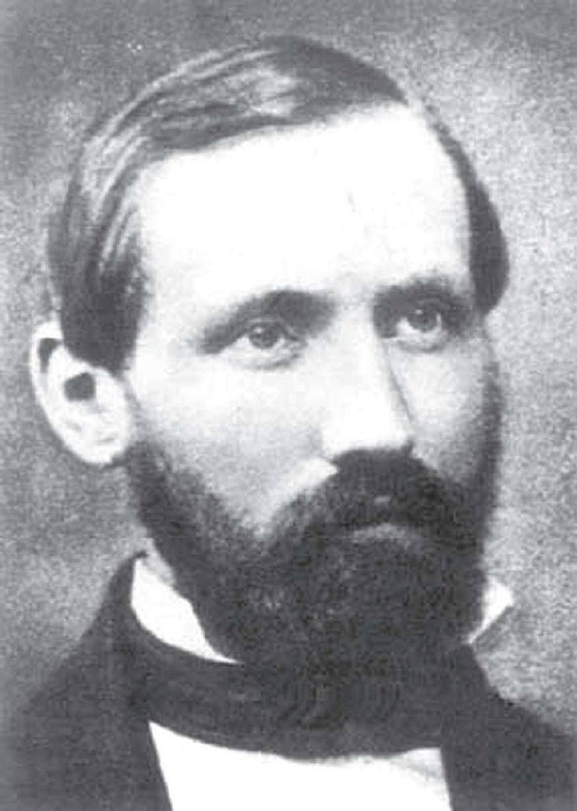
高斯最得意的弟子黎曼
黎曼的研究是以高斯关于曲面的内蕴微分几何为基础的，后者也是19世纪几何学的重大突破之一。在蒙日开创的微分几何中，曲面是在欧几里得空间内考察的。但是，高斯的论文《关于曲面的一般研究》（1828）则提出了一种全新的观念，即一张曲面本身就可构成一个空间，它的许多性质（如距离、角度、总曲率）并不依赖于背景空间，这种以研究曲面内在性质为主的微分几何被称为“内蕴微分几何”。值得一提的是，中国数学家陈省身（1911—2004）率先给出了高维黎曼流形上的高斯—博内公式的内蕴证明，成为现代微分几何学的出发点，并将“示性类”引入其中。陈省身的学生丘成桐（1949—）所证明的“卡拉比猜想”则是在给定里奇曲率的条件下求出黎曼度量，这个猜想在超弦理论中扮演着十分重要的角色，这项成果帮助丘成桐获得了1983年的菲尔兹奖。
1854年，在担任哥廷根大学无薪讲师（仅从修课学生的学费中提取佣金）职位的就职典礼上，黎曼发表了题为“关于几何基础中的假设”的演说（高斯从黎曼提供的三个题目中选择了这一个），他把高斯的内蕴几何从欧几里得空间推广到任意n维空间。黎曼把n维空间称作一个流形，把流形中的一个点用n元有序数组（参数）来表示，这些参数也叫作流形的坐标。同时，黎曼定义了距离、长度、交角等概念之后，还引进了子流形曲率的概念。让他尤为关注的是所谓的“常曲率空间”，即每一点上曲率都相等的流形。
对于三维空间，这种常曲率共有三种可能性：
曲率为正常数，曲率为负常数，曲率为零。
黎曼指出，第二种和第三种情形分别对应罗巴切夫斯基几何和欧几里得几何，而第一种情形对应的则是他创造的黎曼几何。在黎曼几何里，过已知直线外一点不能作任何直线平行于该已知直线。可以说，黎曼是第一个理解非欧几何学的全部意义的数学家。
现在还剩下一个问题，在锐角假设的相容性被证明之前，平行公设对于欧几里得几何其他公设的独立性尚难保证。幸运的是，这一点很快就被来自意大利、英国、德国和法国的数学家各自独立地证实了。他们所用方法的共同点是，提出欧几里得几何的一个模型，使得锐角假设的抽象思维在其上得到具体解释。这样一来，非欧几何学中的任何不相容性将意味着欧几里得几何存在对应的不相容性。也就是说，只要欧几里得几何没有矛盾，罗巴切夫斯基几何也不会有。这样一来，非欧几何学的合法地位就得到了充分保障，它也具备了现实意义。
与罗巴切夫斯基几何一样，黎曼几何的一些定理与欧几里得几何是相同的。例如，直角边定理（斜边和一条对应直角边相等的两个三角形全等），等角对等边定理。但是，黎曼几何中的一些定理却完全不符合人们的惯性思维。例如，一条直线的所有垂线相交于一点，两条直线可以围成一个封闭的区域。又如，在一个球面上，连接两点的最短路径所形成的曲线是通过这两点并以球心为圆心的大圆的弧。如果将欧几里得几何公理中的直线解释为大圆，那么这样的直线是无界的但长度有限，而且在这个球面上没有两条平行直线，因为任何两个大圆均相交。
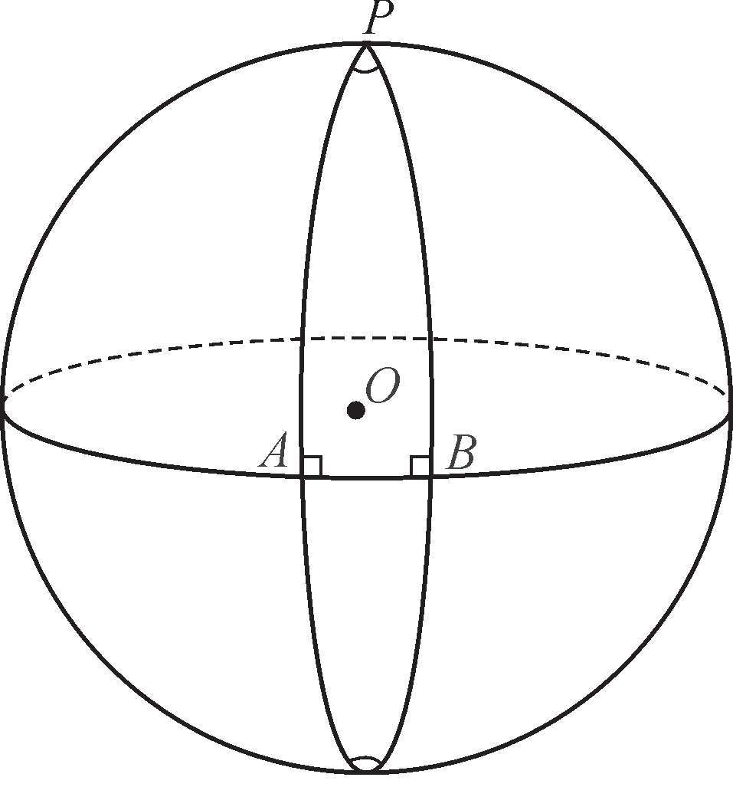
黎曼几何学图例
这样一来，球面上的一个三角形就是三个大圆的弧所围成的图形。很容易发现，这样一个三角形的内角和大于180度。事实上，我们可以让三角形的两条边同时垂直于另一条边，这样便形成了两个直角。有意思的是，一方面，在罗巴切夫斯基几何中，任何一个三角形的内角和总是小于180度。不仅如此，面积较大的三角形具有较小的内角和（黎曼几何则刚好相反）。另一方面，对罗巴切夫斯基几何来说，相似的三角形必然全等，而两条平行线之间的距离，沿一个方向趋近零，沿另一个方向则趋于无穷大。
1826年，黎曼出生在汉诺威附近的一个小村庄，那里邻近莱布尼茨晚年的居住地和高斯的故乡。黎曼的父亲是路德教牧师，他的母亲是法庭评议员的女儿。由于经济困难造成营养不良，导致黎曼的母亲过早死亡。黎曼在父亲的教育下开始学习，对波兰的苦难史尤感兴趣，充满同情心。他迷恋上算术，并能够自己发明难题来捉弄兄弟姐妹。14岁时，黎曼到汉诺威跟他的祖母一起生活，就读当地的文科中学，他听从父亲的意见，打算长大后成为一名传教士。没想到校长很赏识黎曼的才华，允许他缺课并借阅校长的藏书，结果他很快就读完了勒让德的巨著《数论》和欧拉的微积分学著作。
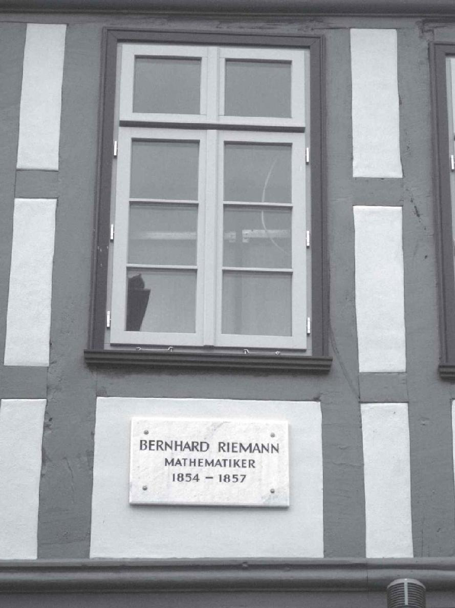
黎曼故居。作者摄于哥廷根
19岁那年，黎曼进入哥廷根大学学习神学和哲学。但他总忍不住去听高斯等教授的数学课，终于决心改换专业，他的父亲也欣然同意了。后来，黎曼觉得不够，遂在第二年转学到柏林大学。事实上，高斯是一个厌恶教学的人，而德国的大学允许学生相互选课。当时的柏林大学有数学家雅可比和狄利克雷（P.G.L.Dirichlet，1805—1859），黎曼从他们那里分别学习力学和代数，数论和分析。两年后，黎曼回到哥廷根大学，直到完成学业。那时黎曼已经23岁了，该轮到高斯指导他了。他也成为高斯最出色的学生，其博士论文《单复变函数的一般理论基础》得到了高斯难得一见的高度评价。
黎曼继狄利克雷之后接替了高斯的职位，他晋升教授后即娶妻生女，不久却患上胸膜炎和肺病，最后病逝于意大利北部马焦雷湖畔的疗养地塞拉斯加，还不到40岁。在他短暂的一生中，黎曼在许多数学领域都做出了开拓性贡献，影响着后来的几何学和分析学。他的关于空间几何的极具胆识的思想对近代理论物理的发展有着重要的指导意义，在很大程度上为20世纪的相对论提供了数学基础。在以黎曼命名的诸多数学概念或命题中，最著名且最具挑战性的无疑是“黎曼猜想”。
黎曼猜想是关于下列黎曼ζ函数
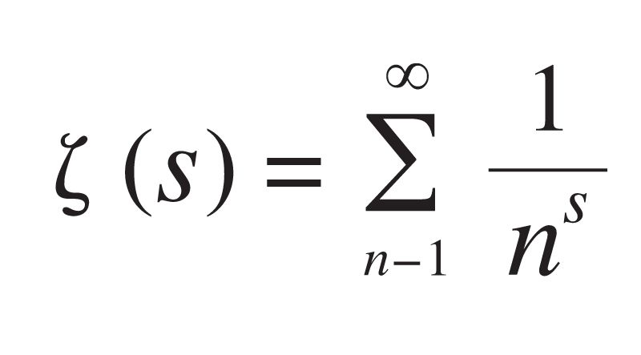
（在解析延拓到整个复平面之后）的零点分布的猜想，它是黎曼在1859年提出来的。已知s=–2，–4，–6，…为其零点（平凡零点）。黎曼猜想，所有的非平凡零点均落在x=
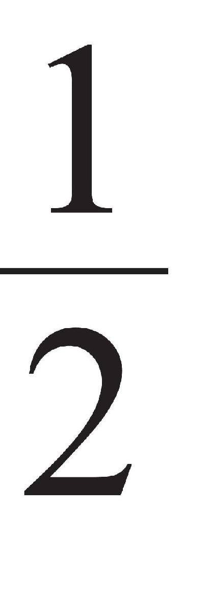
这条垂线上。这个函数和猜想贯穿了数论［通过欧拉建立的一个恒等式ζ（s）与素数发生了联系］和函数论两大领域，被公认为数学史上最伟大的猜想，至今尚无人可以望其项背。据说德国数学家希尔伯特弥留之际表示，如果500年以后他能复活，他最想知道的是“黎曼猜想是否已被证明？”。